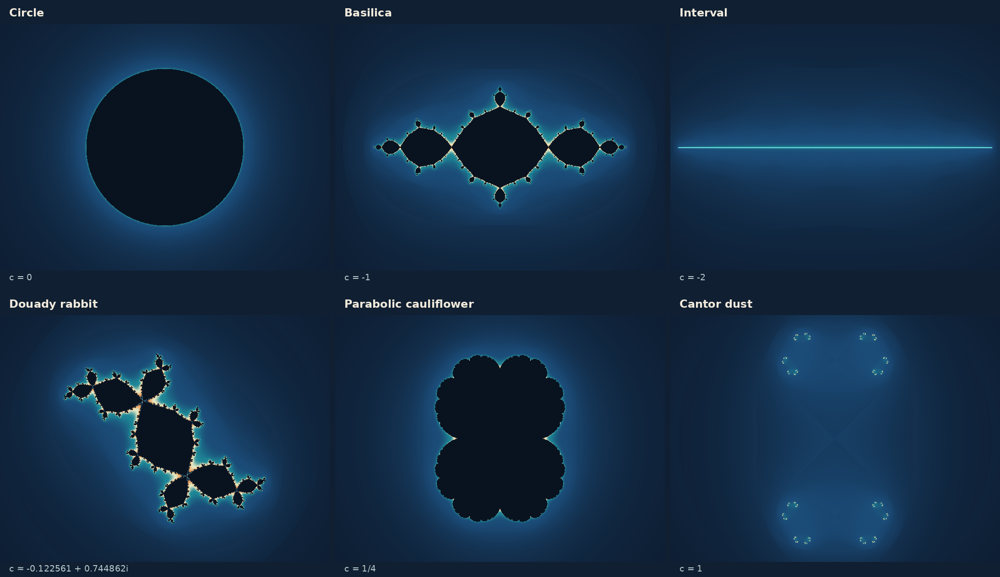

Julia sets
Fix a complex number c, then ask what happens to every possible starting point under z ↦ z2 + c. The Julia set is the boundary of the points whose orbits remain bounded.
The Julia set and the filled Julia set
In the dynamical plane, the parameter c stays fixed while the initial point z varies. The filled Julia set Kc is the set of all initial points with bounded forward orbits. The Julia set Jc is its boundary:
Jc = ∂Kc.
These are not generally the same object. A filled Julia set can contain open regions of starting points attracted to the same cycle. Those regions are inside Kc but outside Jc. In other cases the filled set has no interior and coincides with its boundary. The distinction is explicit in Mikhail Lyubich’s book Conformal Geometry and Dynamics of Quadratic Polynomials, §20.
The most useful elementary example is c = 0, which the orbits chapter followed point by point. Here fn(z) = z2ⁿ. Points with |z| < 1 tend to zero, points with |z| > 1 escape, and points with |z| = 1 remain on the unit circle. Thus the filled Julia set is the closed unit disk, while the Julia set is only its circumference.
A family with very different geometries


| Parameter | Exact or characteristic behavior | Shape to recognize |
|---|---|---|
| c = 0 | Zero is a superattracting fixed point. | A disk with a circular Julia boundary. |
| c = −1 | 0 ↔ −1 is a superattracting two-cycle. | The basilica: two prominent lobes and infinitely many smaller attachments. |
| c = −2 | 0 → −2 → 2 → 2. | The interval [−2, 2]; here J = K. |
| c ≈ −0.1225611669 + 0.7448617666i | 0 is a superattracting point of period three. | Douady’s rabbit, with a threefold cycle of major lobes. |
| c = 1/4 | The critical orbit approaches the parabolic fixed point 1/2. | The cauliflower: a closed curve with inward-pointing cusps at the fixed point 1/2 and at all its preimages. |
| c = 1 (outside M) | The critical orbit begins 0 → 1 → 2 → 5 and escapes. | A Cantor Julia set, informally called fractal dust. |
The rabbit’s parameter is a root of c3 + 2c2 + c + 1 = 0, the condition for 0 to return to itself after three steps; the periodicity chapter derives it under centers. The displayed decimal is rounded; only the exact root is superattracting.
Connected or dust: the quadratic dichotomy
The critical orbit decides connectivity:
If zero escapes, the filled Julia set equals the Julia set and is a Cantor set: it is compact, has no isolated points, and every connected component is a single point. The specks in a low-resolution image are clusters of infinitely many finer pieces. This dichotomy is special to maps with a single critical point; Julia sets of higher-degree polynomials can be disconnected without being dust (cubic polynomials). Devaney’s Mandelbrot–Julia tour illustrates the quadratic correspondence.
The reason can be seen by pulling a large disk backward. Let D be a closed disk around 0 so large that every orbit leaving it escapes; any radius larger than max(2, |c|) will do, and Kc lies inside D. Each point w has the two preimages ±√(w − c), which coincide only at w = c, the critical value. So the preimage of a disk-shaped region is again one disk-shaped region if c lies inside the region, and two separate disk-shaped pieces if c lies outside it. (If c lies exactly on its edge, the two pieces touch at 0.) Pull D back again and again: the filled Julia set is what remains of all the preimages. If the orbit of 0 stays in D, every preimage is a single region, each inside the last, and what remains is connected. If the orbit of 0 leaves D after n steps, the regions split in two from then on, and a further argument shows that the pieces shrink to points, so that what remains is a Cantor set. Milnor’s lectures make the connected case precise with equipotential curves (Theorem 17.3), and Devaney’s page on the fundamental dichotomy states both cases.
A Cantor set is disconnected and still has no isolated points; the two properties say different things. Disconnected means that the set falls apart into separate pieces, and a Cantor set does so completely: no two of its points lie in a common connected piece. An isolated point is a point of the set with no other point of the set near it, and a Cantor Julia set has none: every one of its points has other points of the set arbitrarily close to it. The pullback shows both, one preimage of D after the other; call each of them a stage. Once the regions have started to split, each piece of one stage contains exactly two pieces of the next, and the pieces shrink to points, so no two points stay in a common piece. But every point of the set lies in a piece of every stage, and of the two pieces of the next stage inside it, the one without the point also contains points of the set. As the pieces shrink, those points come closer and closer.
Georg Cantor’s own set, drawn in the chaos chapter, behaves the same way on a line. Remove the open middle third of [0, 1], then the middle third of each of the two remaining intervals, and so on without end. The point 0 is never removed, and neither are 1/3, 1/9, 1/27, …, which come arbitrarily close to it; yet any two remaining points are separated by a gap removed at some stage. A computed picture of a Cantor Julia set follows each orbit for a limited number of steps, so it shows the pieces of one stage as specks, and each speck, magnified, turns out to be a cluster of smaller specks:
Circles, dust, trees, and pinched sets
Connected means the set cannot be split into two separated nonempty pieces. It does not mean smooth, thick, or easy to draw, and connected Julia sets come in very different forms:
- Deformed circles. For every c in the main cardioid of the Mandelbrot set, where the map has an attracting fixed point, the Julia set is a closed curve without self-intersections, a deformed circle known as a quasicircle (Lyubich’s book, Proposition 25.21). At c = 0 it is the round circle; nearer the cardioid’s edge it becomes wildly crinkled.
- Pinched sets. In the basilica at c = −1, the bounded regions of the filled Julia set touch one another at single points. The Julia set is the boundary of all of them, an infinite chain of loops pinched together. In Douady’s rabbit, three regions meet at each pinch point.
- Dendrites. A dendrite is a locally connected continuum containing no simple closed curve: typically a tree with branching at arbitrarily small scales. At c = −2 the Julia set is the simplest example, the interval [−2, 2]. Parameters whose critical orbit lands on a repelling cycle after some steps, such as c = i, give more intricate dendrites. For these Misiurewicz parameters Kc = Jc has no interior: every finite cycle repels, and every bounded Fatou component would need a cycle that does not repel (see the classification below). Milnor’s lectures show the dendrite for c = i (Figure 1c) and note that every finite cycle of a map whose critical orbit is finite is repelling or superattracting (Corollary 11.6). The special-points chapter works through both examples.
Outside the Mandelbrot set there is only one form: a Cantor set, compact, with no isolated points and no connected piece larger than a point.
The Fatou set: where the dynamics is tame
The complement of the Julia set is the Fatou set. On it the iterates behave regularly: nearby starting points have nearby orbits. Precisely, a point z lies in the Fatou set if, however small a distance one chooses, every starting point close enough to z has an orbit that stays within that distance of the orbit of z, at every step. Distances are measured here on the Riemann sphere, so that all very large numbers count as close to each other; otherwise two escaping orbits, such as those of 2 and 2.001 for c = 0, would count as far apart. In the language of analysis, the iterates form a normal family near z. The Julia set is exactly where this fails.
For c = 0, every point inside the unit circle lies in the Fatou set: its orbit and the orbits of points near it all approach 0. So does every point outside, whose neighbors all escape with it. A point on the circle does not: however close to it they start, points just inside approach 0 and points just outside escape, while its own orbit stays on the circle. The point 1, for example, is fixed, its orbit as simple as can be, and it still lies in the Julia set. The definition concerns neighborhoods of points rather than single orbits.
For a polynomial, the escaping points form one Fatou component, the basin of infinity, whose boundary is the whole Julia set. The other Fatou components are bounded and lie inside the filled Julia set. Two worked examples:
- For c = 0, the Fatou set consists of the open unit disk, the basin of the superattracting fixed point 0, and the outside of the circle.
- For c = −1, the basilica, the bounded Fatou components are infinitely many. The two that contain 0 and −1 form the immediate basin of the cycle 0 ↔ −1, and the map swaps them. Every other bounded component is a preimage of one of these: after finitely many steps it lands on one of the two. That is why the filled Julia set repeats the same lobe at smaller and smaller scales.
Attracting basins are not the only kind of bounded component. Near a parabolic cycle, points are drawn in slowly through regions called petals; around a Siegel point they rotate forever without approaching it. The chapter on neutral cycles explains these cases.
Sullivan’s no-wandering-domains theorem (1985) says every Fatou component of a rational map, hence of a quadratic polynomial, eventually maps into a periodic cycle of components. Together with the classification of periodic components, it means that every bounded Fatou component of a quadratic polynomial eventually maps onto a component of an immediate attracting basin, of an immediate parabolic basin, or onto a Siegel disk. Each of these cycles of components belongs to a cycle that does not repel, and a quadratic polynomial has at most one such cycle, so all its bounded Fatou components eventually land in one attracting basin, one parabolic basin, or one cycle of Siegel disks. Omar Antolín Camarena’s notes state the classification, and Christopher Bishop’s exposition explains Sullivan’s theorem and sketches its proof for polynomials.
The structure of the Julia set
The Julia set is where escaping and bounded orbits meet: every neighborhood of a point of Jc contains starting points of both kinds. A small uncertainty in a starting point near the Julia set can therefore hide a large difference in its fate. From the definition, a handful of theorems follow, all proved in Milnor’s lectures (§3 and §11):
- It is completely invariant. The image of a point of Jc, and both of its preimages, lie in Jc again (Lemma 3.1).
- It has no isolated points (Corollary 3.10). In particular it is an infinite set; in fact it is uncountable.
- Repelling periodic points are dense in it. Every neighborhood of every point of Jc contains a repelling periodic point (Theorem 11.1).
- Backward orbits fill it. The preimages, preimages of preimages, and so on, of any point of the Julia set come arbitrarily close to every point of it (Theorem 3.9). This is how inverse iteration draws a Julia set: start on Jc, for example at a repelling fixed point, and keep taking both preimages ±√(w − c). The gallery’s Cantor dust for c = 1 is drawn this way.
- Every small piece covers everything. If an open set meets the Julia set, then after enough steps its part of the Julia set is mapped onto the whole Julia set (Corollary 11.2). This is why a Julia set looks alike at every scale and in every place: under the map, any small piece of it expands onto the whole.
On its Julia set, z2 + c is chaotic in the sense used in the chapter on chaos: periodic points are dense, a typical orbit wanders densely over the whole set (Corollary 3.11), and nearby starting points separate.
Individual orbits in the Julia set can still be simple: a periodic point stays on its cycle forever. Whether a cycle lies in the Julia set depends on its multiplier λ and, when |λ| = 1, on the kind of neutral cycle (Milnor’s lectures, Theorem 3.3 and Lemmas 3.4 and 8.1):
- Repelling, |λ| > 1: always in the Julia set. The cycle is bounded, so it is not among the escaping points. Each return pushes nearby starting points farther apart, by about |λ|, which cannot happen inside the filled Julia set away from its boundary, where nearby orbits stay close together. So the cycle lies on the boundary, which is the Julia set.
- Attracting, |λ| < 1: in the Fatou set, inside the filled Julia set. Every nearby orbit is drawn in, so all of them behave alike.
- Neutral, |λ| = 1: a parabolic cycle lies in the Julia set, like the fixed point 1/2 at c = 1/4, and so does a Cremer cycle. Each point of a Siegel cycle lies in the Fatou set, at the center of a Siegel disk.
The two fixed points show this well. A fixed point solves a2 + c = a, and a quadratic equation has two solutions, so every c has two fixed points, (1 ± √(1 − 4c))/2; at c = 1/4 they coincide. For every c they add up to 1, because the ± terms cancel, so their multipliers 2a add up to 2. If one attracts, with multiplier λ, the other has multiplier 2 − λ, whose modulus is greater than 1, so it repels; the same sum shows that at least one fixed point always lies in the Julia set. For c = 0 they are 0 and 1: 0 attracts and is the center of the disk, and 1 repels and lies on the circle. For c = −1, the basilica, they are about 1.618 and −0.618, with multipliers about 3.24 and −1.24. Both repel, so both lie in the Julia set: 1.618 is the basilica’s rightmost point, and −0.618 is where the lobe around 0 touches the lobe around −1. The basilica is typical: both fixed points repel for every c outside the main cardioid (the region of parameters with an attracting fixed point) and off its edge (where one of them is neutral). An attracting cycle, if there is one, then has a longer period, like 0 ↔ −1.
Symmetry without identical motion
Because fc(−z) = fc(z), opposite starting points have identical orbits after the first step. Every quadratic filled Julia set and Julia set is therefore invariant under a half-turn around the origin. When c is real, complex conjugation gives reflection symmetry across the real axis as well.
For nonreal parameters, reflection instead relates two different pictures: Jconj(c) is the mirror image of Jc in the real axis. A single nonreal Julia set need not be mirror-symmetric, as the rabbit shows. These symmetries make useful checks when examining a rendered image.
The half-turn is why so many Julia pictures show two matching halves, joined at the critical point 0. The eye often finds a center in each half as well, and in most such pictures it is the fixed point α, the one of the two whose multiplier 2α has the smaller modulus, or its mirror point −α, which lands on α in one step. These pictures come from parameters near the edge of the main cardioid. On the edge, |2α| = 1, so near it the modulus is close to 1: near α, one step turns everything by the angle of 2α and stretches it only a little. The Julia set, which the map carries onto itself, therefore winds around α in spirals or arms. The half-turn copies this winding to −α. The other fixed point, β, usually has a multiplier of much larger modulus and sits at an outer tip, with −β at the opposite one. Farther from the cardioid’s edge the centers fade: in the basilica, α is only the point where two lobes touch. The Mandelbrot set has neither this half-turn symmetry nor fixed points of its own, but its shape records α and β (fixed points and the parameter plane).
How a Julia picture is made
For each pixel, convert its position to an initial complex value and iterate using the same fixed c. An iterate farther from 0 than max(2, |c|) proves escape; radius 2 works for every starting point whenever |c| ≤ 2. The escape-radius argument explains why. Escaped samples are colored by their escape time; samples that have not escaped within the iteration budget are drawn dark. The result approximates the filled Julia set Kc, and its edge approximates Jc.
When the filled Julia set has no interior, as for dendrites and dust, this method draws almost no dark pixels, because most pixels miss the thin set; the set shows only indirectly, through the slow escape of nearby points. Then inverse iteration, described above, or distance estimates draw the Julia set itself. Two limits remain: too few iterations make slowly escaping points look bounded, and too few pixels hide narrow gaps. The chapter on computing the pictures compares the methods, and the gallery’s image-method notes describe how the atlas’s plates handle both limits.
Check yourself
For c = 0, which of the points 0.5, i, 1 + i and the point at one third of a full turn on the unit circle lie in the filled Julia set, and which in the Julia set?
0.5 is in K0, the closed unit disk, but not on its boundary, so it is not in J0. The point i and the point at one third of a turn have modulus 1, so they lie on the unit circle, which is J0. The point 1 + i has modulus √2 > 1, so it escapes and lies in neither.
Show that if z lies in Kc, so does −z.
(−z)2 + c = z2 + c, so after one step the orbits of z and −z are identical. If one is bounded, so is the other.
Is the Julia set of z2 + 1 connected?
No. The orbit of 0 is 0, 1, 2, 5, 26, …, which escapes, so 1 is not in the Mandelbrot set and J1 is a Cantor set.
For c = −2, write z = 2 cos t. What is f(z)? Use this to show that the interval [−2, 2] is mapped into itself.
f(z) = 4 cos2 t − 2 = 2 cos 2t, by the double-angle formula. Every point of [−2, 2] can be written as 2 cos t, and its image 2 cos 2t lies in [−2, 2] again, so orbits starting in the interval stay bounded. In fact the interval is the whole filled Julia set K−2.
Which points z satisfy z2 + c = c? Why does this make the critical value special when pulling regions backward?
Only z = 0. Every other value w has two different preimages ±√(w − c), but w = c has the single preimage 0. Whether a region contains c decides whether its preimage is one piece or two, which is how the critical orbit controls connectivity.
In the basilica, let U be the bounded Fatou component containing 0 and V the one containing −1. Where does the map send U and V?
The map sends Fatou components onto Fatou components. Since f(0) = −1, it sends U onto V, and since f(−1) = 0, it sends V back onto U. Together they form the immediate basin of the two-cycle.
Sources and further reading
- Mikhail Lyubich — Conformal Geometry and Dynamics of Quadratic Polynomials — filled Julia sets, Julia boundaries, and the quadratic connectivity theorem, especially §20; Julia sets that are quasicircles, Proposition 25.21 (book draft; a 35 MB PDF).
- Robert Devaney — The Mandelbrot Set Explorer, Exploration #3 — a visual introduction to how parameters select connected sets or dust.
- Omar Antolín Camarena — Iteration of Rational Functions — Julia and Fatou sets, periodic components, and normal families.
- Christopher Bishop — Wandering domains — a detailed exposition of Sullivan’s theorem, with a proof sketch for polynomials.
- John Milnor — Dynamics in One Complex Variable, introductory lectures — the structure of Julia sets (§3, §11), the filled Julia set and connectivity (§17), and the local theory.
Sources checked on 20 October 2026.